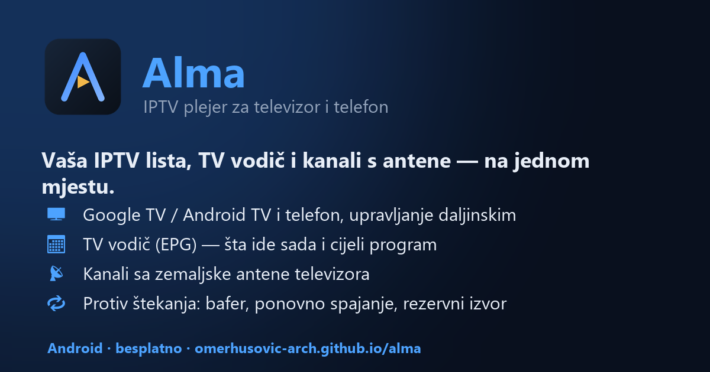

Šta nudi
📋 Vaše listeM3U (link ili fajl), Xtream Codes i MAC portal. Listu možete dodati i s telefona — skenirate QR kod na televizoru.
📅 TV vodič (EPG)Šta ide sada, a ispod slike cijeli program kanala s opisom svake emisije. Vodič se sam dopunjava za kanale bez programa.
📡 Kanali s anteneNa televizorima s prijemnikom kanali sa zemaljske antene su u Almi, s programom koji šalje antena.
🎬 Filmovi i serijeFilmovi i serije iz vaše liste složeni po kategorijama, nastavak gledanja, titlovi s interneta.
🔁 Protiv štekanjaPrilagodljiva rezerva, ponovno spajanje, drugi format, rezervni izvor iz druge liste i test brzine.
🎮 DaljinskiGore/dolje kanal, brojevi, favoriti, a tipke daljinskog možete sami podesiti. Prečice za druge aplikacije (YouTube, Netflix…).

Alma ne sadrži kanale — to je plejer. Koristite liste na koje imate pravo (vaš IPTV pružatelj, javne besplatne liste).
Instalacija na televizor (Google TV / Android TV)
- Na televizoru iz Google Play-a instalirajte besplatnu aplikaciju Downloader.
- U Downloaderu upišite adresu
omerhusovic-arch.github.io/almai pritisnite „⬇ Preuzmi“. - Kad televizor pita, dozvolite Downloaderu instalaciju nepoznatih aplikacija (samo prvi put), pa Instaliraj.
- Alma se pojavi među aplikacijama. Listu dodajte u Liste → Dodaj ili s telefona preko QR koda.
Instalacija na telefon ili tablet
- Otvorite ovu stranicu na uređaju i pritisnite „⬇ Preuzmi“.
- Otvorite preuzeti Alma.apk i dozvolite instalaciju iz preglednika (samo prvi put).
- Nova verzija se instalira preko stare — liste i postavke ostaju.